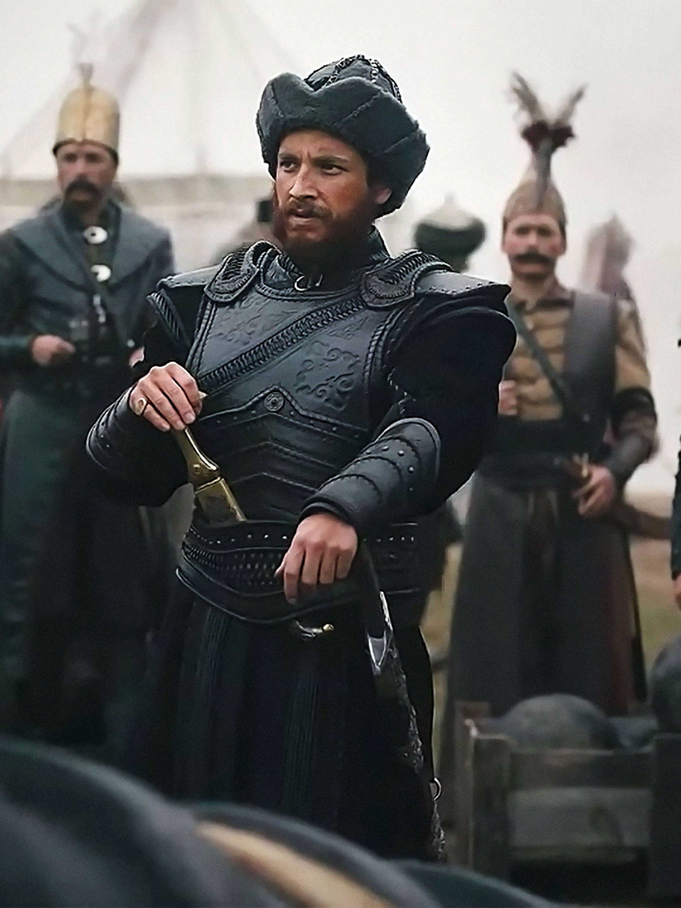

Rise of Empires: Ottoman.Depicting the Ottoman sultan, Mehmet the Conqueror, now in the National Gallery, London.Ottomon Sultan Mehmed II became Mehmed the Conqueror after taking the 1,000-year-old fortress capital of the Byzantine Empire, Constantinople, in May 1453.Map illustrating how big the empire was.After conquering constantinople.Young Mehmed II, overlooking constantinople.Depiction of Mehmed II generated by AI.Janissary corps was established by Sultan Murat I, in late 1300s. It was basically the elite sentry corps of the emperor.The Basilic or The Ottoman Cannon was a very large-calibre cannon designed by Orban.